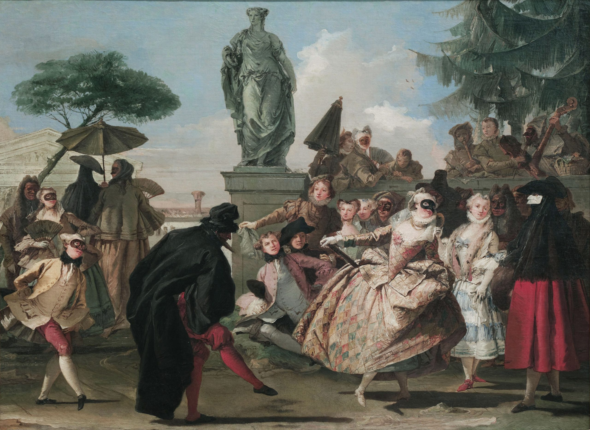
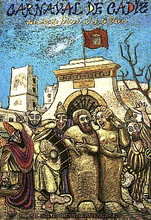
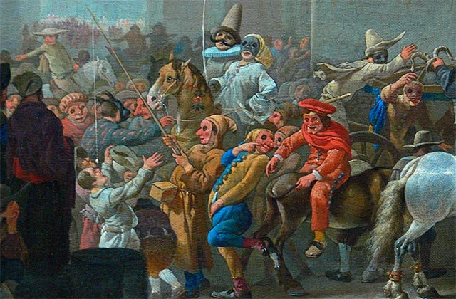

El Carnaval de Cádiz tiene sus orígenes entre los siglos XVI y XVII, cuando la ciudad mantenía un intenso comercio con Italia, especialmente con Venecia. De ahí llegaron las primeras ideas de fiestas con disfraces y música.

Con el paso del tiempo, el carnaval gaditano fue adquiriendo una personalidad propia, basada en el humor, la crítica social y el ingenio de sus letras. Durante el siglo XX, la fiesta vivió momentos difíciles, especialmente durante la dictadura, cuando estuvo prohibida y se disfrazó bajo el nombre de “Fiestas Típicas Gaditanas”.

Tras la recuperación de la democracia, el Carnaval de Cádiz volvió con fuerza y se consolidó como una de las celebraciones más importantes de España, siendo hoy en día un símbolo de la cultura y la identidad gaditana.
